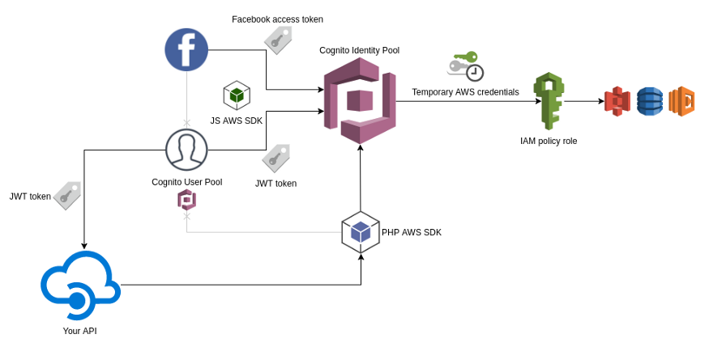

Amazon Web Services
Table of Contents
1 Services
| ASG | Auto Scaling Group |
|---|---|
| CloudFormation | |
| EC2 | Elastic Compute Cloud |
| ELB | Elastic Load Balancing |
| IAM | Identity and Access Management |
| RDS | Relational Database Service |
| Security Groups | |
| VPC | Virtual Private Cloud |
2 SDK
3 API Gateway
API Gateway 用于创建 REST API，以调用 Lambda 函数或访问其他资源。

| APIs | 定义路径、HTTP 方法、动作等 |
|---|---|
| Usage Plans | 限制使用频率 |
| API Keys | 请求身份验证 |
| Custom Domain Names | 映射 URL 到其他域名 |
| Settings | 设置 IAM |
3.1 APIs
| Resources | Define API paths and actions |
|---|---|
| Stages | API snapshots that are deployed |
| Authorizers | Authentication settings |
| Models | Model schemas for data validation |
| Documentation | |
| Binary Support | Support sending files in requests |
| Dashboard | Monitoring |
3.1.1 Resources
| Configure as Proxy Resource | Create a catch-all resource that forwards all requests to backend |
|---|---|
| Enable API Gateway CORS | Create an OPTIONS method that receives preflight requests, and responds HTTP headers to allow CORS |
- CORS
CORS (Cross-Origin Resource Sharing) enables clients hosted under a different domain name to communicate with API Gateway. There are 2 ways to enable CORS on a method.
Manually enabling CORS:
- When creating a resource, check "Enable API Gateway CORS" box.
- After creating a method, go to Method Response > 200, and add a header
Access-Control-Allow-Origin. - Go to Integration Response > 200 > Header Mappings, set header
Access-Control-Allow-Originvalue to'*'.
Automatically enabling CORS:
- When creating a resource, check "Enable API Gateway CORS" box.
- After creating methods, perform "Enable CORS" on the resource.
- Leave the default values or customize as needed, and save.
- CORS headers will be added to all methods (if using default values) under the resource.
3.1.2 Method Execution
| Method Request | Request validation and authorization |
|---|---|
| Integration Request | Request data transformation and backend settings |
| Integration Response | Response data transformation |
| Method Response | Response headers and content types |
- Mapping Template
AWS Documentation | API Gateway Mapping Template and Access Logging Variable Reference
Mapping templates are used in "Integration Request" and "Integration Response" to transform data being sent to and received from backend.
- Integration Request
Use Lambda Proxy Integration Instead of a payload, pass the entire request object to the Lambda function "Integration Response" is disabled when this is enabled Mapping Templates Transform request data before passing to backend - Integration Response
Mapping Templates Transform response data before sending to client
4 ASG
ASG launches a cluster of EC2 Instances, monitoring the health of each Instance, replacing failed instances, and adjusting the size of the cluster in response to load.
4.1 Launch Configuration
ASG 的实例启动配置。
5 CloudFormation
5.1 创建栈
- Select blueprint (template) for the infrastructure
- Use sample template
- Upload template
- Specify Amazon S3 Template URL
- Specify parameters
- Specify tags
6 Cognito
Amazon Cognito | Developer Resources
Cognito provides authentication function, by defining auth rules and issuing tokens (or temporary IAM role credentials) to users to access other services. Users are authenticated by the Cognito User Pool, or third-party providers such as Google and Facebook.

7 DynamoDB
NoSQL database service, which is provided as a pool, there is no server setup or provisioning, and scaling is automatic.
7.1 Capacity
| Provisioned | Estimate capacity beforehand, fixed limits, cheaper |
|---|---|
| On-demand | No estimation, pay per request |
7.2 Partitions
Amazon DynamoDB | Partitions and Data Distribution
| Partition key | A key that each item must have, determining which partition the item will be stored in |
|---|---|
| Sort key | A key to sort items within the same partition |
| Primary key | Partition key alone, or partition key + sort key |
7.3 Indexes
7.3.1 Global Secondary Indexes
7.3.2 Local Secondary Indexes
8 EBS
EBS is storage volumes that can be created and attached to EC2 instances. EBS volumes are automatically replicated to protected from failure.
9 EC2
提供虚拟服务器（virtual server）。
服务器操作系统可以选择 Amazon 优化的发行版 Amazon Linux 或 Ubuntu 等。
10 ELB
负载均衡服务，默认是高可用（highly available）的。
11 IAM
AWS 默认不赋予服务任何权限，即服务之间无法交互，需要为每个服务提供权限。
11.1 Users
Root 用户应当只用于创建其他用户。
11.2 Policies
Policy 是定义用户权限的 JSON 文件。
AmazonDynamoDBFullAccess |
|
|---|---|
AmazonEC2FullAccess |
|
AmazonRDSFullAccess |
|
AmazonS3FullAccess |
|
CloudWatchFullAccess |
|
IAMFullAccess |
12 Lambda

12.1 Event Sources
| S3 | e.g. file uploaded |
|---|---|
| CloudWatch | e.g. EC2 instance launched |
| API Gateway | e.g. HTTP request |
12.2 Best Practices
Take advantage of Execution Context reuse to improve performance. Make sure externalized configuration and dependencies are stored and referenced locally after initial execution. Limit the re-initialization of variables/objects on every invocation. Instead use static initialization/constructor, global/static variables and singletons. Keep alive and reuse connections (HTTP, database, etc.) that were established during a previous invocation.
12.3 Debug
Lambda 函数执行时向 CloudWatch 写入日志，可以用于 debug。
13 RDS
- 支持 MySQL、PostgreSQL、SQL Server、Oracle 等。
- 自动进行备份、升级等工作。
14 S3
- S3 支持服务器端加密，如 AES-256。
- S3 支持保存文件的多个版本（revision）。
14.1 Bucket
Bucket 名全局唯一，一般使用域名倒叙，如 com.company.domain 。
15 Security Groups
用于控制网络流量（traffic）的服务，类似防火墙，可以附加到其他服务如 EC2、ELB、RDS 上。
对于 EC2 实例，AWS 默认禁止接收和发送任何流量。
示例：
- 配置负载均衡器只开放 80 端口（接受外网请求）。
- Web 服务器只开放 80 端口（接受负载均衡器的请求）和 22 端口（用于 SSH 连接）。
- RDS（MySQL）只开放 3306 端口（接受 web 服务器请求）。
16 VPC
A VPC (Virtual Private Cloud) is an isolated area of AWS account that has its own virtual network and IP address space. A VPC is partitioned into one or more subnets, each which has its own IP addresses.
A Default VPC is part of every new AWS account. The subnets in the Default VPC are all public subnets.
About every AWS resource deploys into a VPC. If not explicitly specified (by VPC ID or subnet ID), the resource will be deployed into the Default VPC.
For production systems, all servers and data stores should be deployed in private subnets, which have IP addresses that can only be accessed from inside the VPC. The only servers to run in public subnets are a small number of reverse proxies and load balancers.
17 管理
17.1 Tag
键值对，用于为架构中的组件附加信息，比如区分测试和生产资源，或标记资源属于多个应用中的某一个。
17.2 Resource Group
「资源」包括 EC2 服务器、RDS 数据库、安全组等。